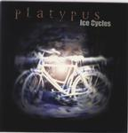

| Artist: | Platypus |
| Title: | Ice Cycles |
| Label: | Inside Out Music IOMCD 056 |
| Length(s): | 46 minutes |
| Year(s) of release: | 2000 |
| Month of review: | 04/2000 |
| 1) | Oh God | 4.16 |
| 2) | Better Left Unsaid | 5.24 |
| 3) | The Tower | 3.30 |
| 4) | Cry | 6.15 |
| 5) | I Need You | 4.17 |
| 6) | 25 | 5.09 |
| 7) | Gone | 6.42 |
| 8) | Partial To The Bean | 10.33 |
| (A Tragic American Quintogy) | ||
| a) Intro Pompatous | 0.21 | |
| b) Yoko Ono | 1.27 | |
| c) Yoko Two-no | 1.01 | |
| d) Yoko Three-no | 2.13 | |
| e) Platmosis | 1.16 | |
| f) Yoko Againo | 2.08 | |
| g) Yoko Outro | 2.07 |